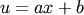
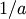

numpy.polynomial.hermite.hermint¶
- numpy.polynomial.hermite.hermint(c, m=1, k=[], lbnd=0, scl=1, axis=0)¶
Integrate a Hermite series.
Returns the Hermite series coefficients c integrated m times from lbnd along axis. At each iteration the resulting series is multiplied by scl and an integration constant, k, is added. The scaling factor is for use in a linear change of variable. (“Buyer beware”: note that, depending on what one is doing, one may want scl to be the reciprocal of what one might expect; for more information, see the Notes section below.) The argument c is an array of coefficients from low to high degree along each axis, e.g., [1,2,3] represents the series H_0 + 2*H_1 + 3*H_2 while [[1,2],[1,2]] represents 1*H_0(x)*H_0(y) + 1*H_1(x)*H_0(y) + 2*H_0(x)*H_1(y) + 2*H_1(x)*H_1(y) if axis=0 is x and axis=1 is y.
Parameters : c : array_like
Array of Hermite series coefficients. If c is multidimensional the different axis correspond to different variables with the degree in each axis given by the corresponding index.
m : int, optional
Order of integration, must be positive. (Default: 1)
k : {[], list, scalar}, optional
Integration constant(s). The value of the first integral at lbnd is the first value in the list, the value of the second integral at lbnd is the second value, etc. If k == [] (the default), all constants are set to zero. If m == 1, a single scalar can be given instead of a list.
lbnd : scalar, optional
The lower bound of the integral. (Default: 0)
scl : scalar, optional
Following each integration the result is multiplied by scl before the integration constant is added. (Default: 1)
axis : int, optional
Axis over which the integral is taken. (Default: 0).
New in version 1.7.0.
Returns : S : ndarray
Hermite series coefficients of the integral.
Raises : ValueError :
If m < 0, len(k) > m, np.isscalar(lbnd) == False, or np.isscalar(scl) == False.
See also
Notes
Note that the result of each integration is multiplied by scl. Why is this important to note? Say one is making a linear change of variable  in an integral relative to x. Then .. math::dx = du/a, so one will need to set scl equal to  - perhaps not what one would have first thought.
Also note that, in general, the result of integrating a C-series needs to be “reprojected” onto the C-series basis set. Thus, typically, the result of this function is “unintuitive,” albeit correct; see Examples section below.
Examples
>>> from numpy.polynomial.hermite import hermint >>> hermint([1,2,3]) # integrate once, value 0 at 0. array([ 1. , 0.5, 0.5, 0.5]) >>> hermint([1,2,3], m=2) # integrate twice, value & deriv 0 at 0 array([-0.5 , 0.5 , 0.125 , 0.08333333, 0.0625 ]) >>> hermint([1,2,3], k=1) # integrate once, value 1 at 0. array([ 2. , 0.5, 0.5, 0.5]) >>> hermint([1,2,3], lbnd=-1) # integrate once, value 0 at -1 array([-2. , 0.5, 0.5, 0.5]) >>> hermint([1,2,3], m=2, k=[1,2], lbnd=-1) array([ 1.66666667, -0.5 , 0.125 , 0.08333333, 0.0625 ])

Previous topic
numpy.polynomial.hermite.hermder
Next topic
numpy.polynomial.hermite.hermadd